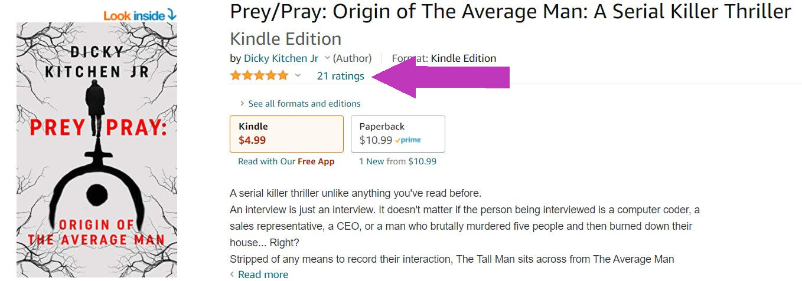

I doubt I’m the first to tell you that reviews matter to authors, and in fact I should probably thank you for taking the time to read another article on reviews at all. And if this is your first time reading an article about reviews, thank you for picking my article above the million other articles out there. Seriously, the internet is littered with authors and creators begging for your reviews.
But why?
What is it about reviews that make authors lose sleep and get all twitchy when readers don’t leave one?
The simplest answer is that book reviews lead to more book sales. But for a little more clarity, lets look at these 3 key points:
Who Uses Reviews:
Think about the last book you read. Did you read the reviews before purchasing it? Chances are, the answer is yes.
Depending on what study you look at, between 80-90% of consumers read reviews prior to buying products. It’s almost impossible not to check reviews these days, and that’s especially true with books.
Amazon, one of the largest booksellers worldwide, shoves the rating right under the title so that it is virtually impossible to not be influenced by reviews left by previous readers.

Check out that beautiful rating for my novel in the picture above.
(edit: first edition no longer available - second edition available here)
They position those devious influencing stars right where you have to see them. With the information thrust in front of you, it’s easy to see how so many people consider a book review before purchasing.
How Do Reviews Affect Ratings:
I know, I know. You think this is a no-brainer, right? Reviews affect ratings because a positive review moves the rating up and a critical review moves the rating down… Right?
Well, yes and no. While it’s true that individual reviews move the rating up or down a little by themselves, it turns out that the amount of reviews actually can influence the overall rating as well.
According to a study done on the site towardsdatascience.com:
“In general, the more reviews a book gets, the higher it’s rating.”
A books rating determines its likelihood of being shown to potential readers when they search for books by keywords. This is a major factor in if an author makes a sale or even gets discovered at all. The reality looks something like this:
More Reviews = Higher Rating = More Sales
The amount of reviews an author gets can make or break them. Do you see why we cry ourselves to sleep at night when you don’t leave reviews yet?
Ok, on to the next (and probably scariest) point!
Who Leaves Reviews:
This is the bane of an author’s existence. The harsh reality is hardly anyone leaves reviews. Ok, maybe it’s not fair to say hardly anyone, but the numbers are seriously small.
Most studies agree that only around 10% of readers leave reviews. You read that right… TEN PERCENT!!! THAT’S ALL!!!
Doesn’t seem like a big deal?
Ok then, let’s look at the math.
At 10%, an author would have to sell ONE THOUSAND books just to get one hundred reviews. And remember the last point, more reviews equal higher ratings which equal more sales.
For new authors, trying to get the amount of sales needed to generate the number of reviews to equal significant sales is like an ant trying to climb a mountain. Only the mountain is Mt Everest, and the ant is missing all the legs on the left side, and the right ones are stuck in cement.
So, do you get the point? Reviews are hugely important to authors.
But why does that matter to you? Ah, now we’re getting to the good stuff! The truth is, reviews are also immensely important to readers.
Any self-published or indie author worth their ink reads the reviews left by readers and is influenced by the feedback given. Even in the traditionally published world, publishers will contact their authors with trends seen in the reviews to influence the direction future projects take.
That’s right, the direction of your favorite book genre is influenced by the reviews you leave.
Can you feel the power coursing through your fingertips? With each keystroke, you help carve the path of future stories written for your genre!
SO, RAISE THOSE POWERFUL HANDS TO THE SKY, LET LOOSE THE THUNDEROUS TIPPY TAPS OF YOUR KEYBOARD (or phone) AND BLESS THOSE YOU DEEM WORTHY WITH YOUR REVIEWS WHILE SMITING THOSE WHO DON’T MEET YOUR EXPECTATIONS!!!!

Gif from https://media3.giphy.com/media/67oWKfDkwuFpByHv3j/giphy.gif?cid=ecf05e47s2ko9isxebyua6wgbf0923as5loedbimk1ywtp10&rid=giphy.gif
Whoa! Hold on there, you little power crazed monster! Don’t let everything go to your head just yet.
Let’s have a brief chat about one last thing before I unleash you on the world to forge the path of stories to come.
With great power comes great responsibility, and great reviews aren’t all positive reviews.
Bad reviews carry a lot of power with them, so before you go out and exercise your new found power, take a look at these examples of bad reviews:
- Example 1:
This book sucks. I can’t believe I bought it. Such complete trash. Ignore everything else you’ve read; this author is an idiot. Seriously, don’t waste your money. - Example 2:
This book really wasn’t for me. I wasn’t expecting the amount of violence and language that was in it. It seemed over the top and kept distracting me from the story. I think I would have enjoyed it more if they kept the violence and language to more realistic standards. - Example 3:
The overall story was ok, but the pacing was really slow. I found it hard to keep reading, and it took me longer to get to the rewarding parts. They could have used less detailed descriptions in certain parts.
While no author wants to receive any of the reviews above, only two of them actually serve a purpose.
Examples 2 and 3 both give feedback that can influence the authors of the books on what readers really want and possibly give the authors better direction for their future projects. In addition, it helps other readers before purchasing decide if those factors listed are things that bother them. Some readers may actually see a review listing over the top violence and language as a positive, where others may actually see it as a negative.
Authors understand that not every book is for every reader, and an informative negative review can actually lead to more positive reviews by helping the book find the right readers.
Example 1 on the other hand is completely void of any purpose other than to vent frustrations. This doesn’t serve the author or potential readers, but I’m sure you’ve seen a review similar to this one.
What people don’t realize when they leave reviews, like in Example 1, is that those reviews don’t get listened to. Authors and potential buyers alike will skip reviews that just involve venting and name calling and focus on the reviews that provide relevant information. Essentially those types of reviewers are just screaming into the void when they could use their voices to influence the genres they are passionate about.
So, now that you have a better understanding of the importance and impact of reviews, go out and leave one for your favorite author(s). And remember, while they don’t all have to be good reviews, hopefully you understand how to make a bad review meaningful and use your new found power responsibly.